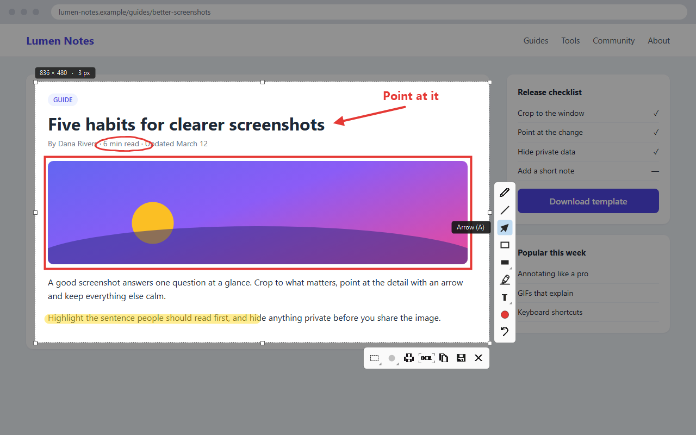
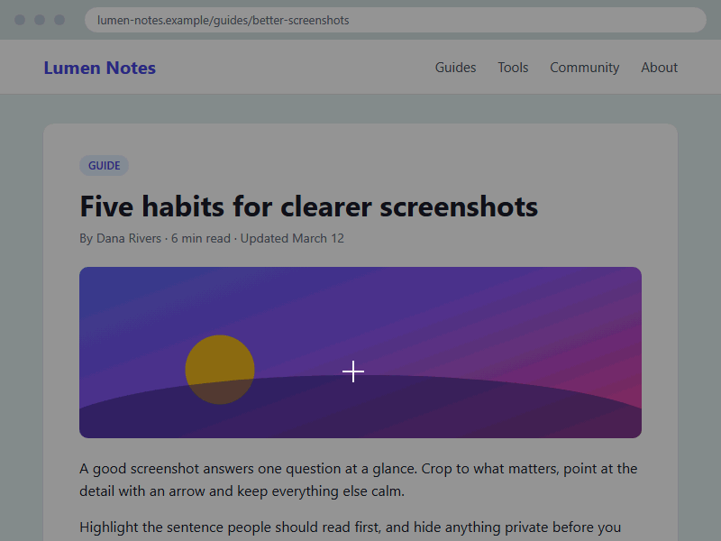

Hide what's private, three ways
Black out passwords, put API keys under frosted glass, pixelate faces and card numbers. The hidden pixels are gone from the image for good.

Press PrtScr, select, point at what matters and hide what's private. Copy it in a second, or record the screen to MP4 and GIF. Lightweight, free and private by design.

The screen freezes, menus and tooltips included.
Drag an area, or Ctrl+A for a whole monitor.
Arrows, boxes, highlighter, text and black-outs.
Ctrl+C to copy, Ctrl+S to save. Done.
ShotLite does the few things a screenshot tool should do, and does them fast. No accounts, no cloud, no bloat.
Black out passwords, put API keys under frosted glass, pixelate faces and card numbers. The hidden pixels are gone from the image for good.
Error dialogs, videos, scanned PDFs. Select, press Ctrl+Shift+C and paste the text. Runs offline on the Windows OCR engine.
Pencil, line, arrow, rectangle, highlighter and text in any color. Hold Shift for straight lines and squares, wheel for thickness.

Lock the selection to 16:9, 9:16, 4:3 or your own ratios. Full size grabs exactly one monitor.

15 languages built in, following Windows automatically. Add your own with one JSON file.
New versions in one click from the tray. Every download is verified against the project's signature before it runs.
Optional upload to your own endpoint; the link lands in the clipboard. Nothing ever goes to a third party.
POST /upload → 200 { "data": { "link": "https://img.example.com/x7.png" } }
Press Ctrl+Shift+PrtScr, click a monitor or drag an area, and you're recording. The frame and the timer stay out of the video. Press the shortcut again to stop.
If you've used Lightshot, you already know ShotLite. Every global shortcut can be changed in the settings.
Lightshot 5.5 is no longer supported. ShotLite keeps its workflow and adds what was missing.
| ShotLite | Lightshot 5.5 | |
|---|---|---|
| PrtScr → select → draw → copy | ✓Same workflow | ✓ |
| Telemetry | ✓None | Yes |
| Uploads to a public image host | ✓Never; only your own server, if you set one up | prntscr.com |
| Black out, frosted glass, pixelate | ✓ | ✕ |
| Copy text (OCR, offline) | ✓ | ✕ |
| Screen recording to MP4 and GIF | ✓ | ✕ |
| Still maintained | ✓Signed updates | ✕ |
ShotLite was built as a replacement for the discontinued Lightshot 5.5, keeping the workflow and dropping the tracking and the forced cloud uploads.
Read what it stores and sends →Yes. It's open source under the MIT License, with no paid tier, no ads and no account.
Windows 11 claims the key by default. ShotLite notices it and offers to turn that Windows setting off with one click, no administrator rights needed.
Only an update check against GitHub, which you can turn off, and uploads to your own server if you set one up. Text recognition runs offline. What ShotLite stores and sends
The installer isn't signed with a paid certificate yet. Click More info, then Run anyway. App updates are signed with the project's own key and verified before they run.
Yes. Download the portable zip, unzip it anywhere and run ShotLite.exe. The portable version doesn't update itself; it links to the new download instead.
The installed version shows a new release in the tray menu. One click downloads it, a second click restarts ShotLite on the new version. You can also let it update automatically.
Free for everyone. {{SIZE}} MB, no runtime to install, ready in a few seconds.